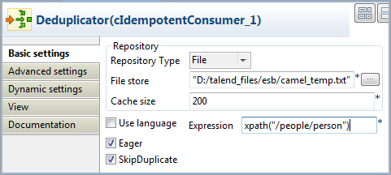
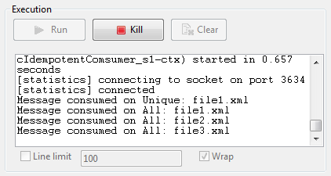

Famille de composant | Routing | ||||
Fonction | Le composant cIdempotentConsumer dédoublonne des messages et empêche que l'endpoint récepteur reçoive les messages en doublon. | ||||
Objectif | Le cIdempotentConsumer identifie les messages déjà envoyés au récepteur et les élimine. Les messages sont toujours envoyés par l'émetteur mais sont ignorés par le récepteur lors de la livraison. | ||||
Basic settings | Repository Type | Les identifiants des messages doivent être stockés dans un Repository. Pour les nouveaux messages entrants, les identifiants sont vérifiés par rapport à ceux stockés dans le Repository afin d'identifier et de supprimer les doublons. Il y a deux moyens de les stocker : Memory : les identifiants des messages sont stockés temporairement.
File : les identifiants des messages sont stockés dans un fichier. Spécifiez le chemin d'accès à ce fichier dans le champ File store. | |||
| File store | Spécifiez le chemin d'accès au fichier stockant les identifiants des messages ainsi que son nom. | |||
| Cache Size | Saisissez la taille du cache, c'est-à-dire le nombre d'identifiants de messages à stocker. | |||
| Use language | Cochez cette case si vous souhaitez spécifier le langage utilisée dans le champ Predicate afin de spécifier l'identifiant des messages. | |||
| Expression | Saisissez l'expression à utiliser pour spécifier l'identifiant des messages. | |||
| Eager | Cochez cette case pour détecter les messages en doublon même lorsque les messages sont en cours de traitement. Décochez-la pour détecter les doublons uniquement lorsque les messages ont bien été traités. Cette case est cochée par défaut. | ||||
| SkipDuplicate | Cochez cette case pour supprimer les doublons. Décochez-la pour ignorer les doublons afin de traiter tous les messages. Cette case est cochée par défaut. | ||||
Utilisation | Le cIdempotentConsumer est utilisé comme composant intermédiaire dans une Route. | ||||
| Connections | idemp | Le lien idemp récupère les messages dédoublonnés par le composant cIdempotentConsumer. | |||
| Route | En tant que lien facultatif, le lien Route récupère tous les messages provenant de l'émetteur. | ||||
Limitation | n/a | ||||
![[Avertissement]](../images/warning.png)
Dans ce scénario, des messages dédoublonnés sont filtrés et seul le message unique est routé vers sa destination.
Trois fichiers XML ayant le même contenu, comme affiché ci-dessus, sont utilisés dans ce scénario.
<people> <person id="8"> <firstName>Ellen</firstName> <lastName>Ripley</lastName> <city>Washington</city> </person> </people>
Ce scénario nécessite un composant cFile, un cIdempotentComsumer et deux cProcessor.

Dans la Palette, développez la famille Messaging, sélectionnez le composant cFile et déposez-le dans l'espace de modélisation graphique comme composant de message source.
Dans la famille Routing, sélectionnez le composant cIdempotentComsumer et déposez le dans l'espace de modélisation graphique comme le composant de dédoublonnage des messages.
Développez la famille Processor, déposez deux composants cProcessor dans l'espace de modélisation graphique, un comme consommateur des messages dédoublonnés et un pour tous les autres messages.
Cliquez-droit sur le cFile, sélectionnez Row > Route dans le menu contextuel et cliquez sur le composant cIdempotentComsumer.
Cliquez-droit sur le cIdempotentComsumer, sélectionnez Row > idemp dans le menu contextuel et cliquez sur le composant cProcessor du dessus.
Reliez le composant cIdempotentComsumer à l'autre cProcessor à l'aide d'un lien Row > Route. Ce lien facultatif récupère tous les messages provenant de la source.
Renommez les composants comme vous le souhaitez afin de mieux identifier leur rôle dans la Route.
Double-cliquez sur le cFile nommé Source, pour afficher sa vue Basic settings.

Dans le champ Path, spécifiez le chemin d'accès au message source.
Dans la liste Encoding, sélectionnez le type d'encodage de vos fichiers source et laissez les autres paramètres tels qu'ils sont.
Double-cliquez sur le cIdempotentComsumer nommé Deduplicator, pour afficher sa vue Basic settings.
Dans la liste Repository Type, choisissez entre Memory et File pour spécifier l'emplacement de stockage des identifiants des messages avant le processus de dédoublonnage. Dans ce scénario, sélectionnez File.
Dans le champ File store, spécifiez l'emplacement de stockage des identifiants des messages.
Dans le champ Expression saisissez une expression pour filtrer les messages. Dans ce scénario, saisissez l'expression suivante pour filtrer les messages selon le nœud person des fichiers XML :
xpath("/people/person")et laissez les autres paramètres tels qu'ils sont. Vous pouvez également cocher la case Use language, sélectionner XPath dans la liste Language et saisir"/people/person"dans le champ Predicate.Double-cliquez sur le composant cProcessor nommé Unique afin d'afficher sa vue Basic settings.

Dans la zone Code, personnalisez le code pour afficher le nom de fichier du message passant le dédoublonnage :
System.out.println("Message consumed on Unique: "+ exchange.getIn().getHeader("CamelFileName"));Répétez ces étapes pour configurer l'autre composant cProcessor nommé All, pour afficher les noms de fichiers de tous les messages provenant de la source :
System.out.println("Message consumed on All: "+ exchange.getIn().getHeader("CamelFileName"));Appuyez sur Ctrl+S pour sauvegarder votre Route.
Cliquez sur l'onglet Code au bas de l'espace de modélisation graphique afin de visualiser le code généré.

Dans ce morceau de code, les messages provenant de (
from) laSourcesont filtrés selon l'expressionxpath("/people/person")et dédoublonnés par le composantcIdempotentConsumer_1.Cliquez sur la vue Run pour l'afficher et cliquez sur le bouton Run pour démarrer l'exécution de la Route. Vous pouvez également appuyer sur F6 pour l'exécuter.
Résultat : Lorsque plusieurs fichiers ont le même contenu, seul le premier est routé vers l'endpoint récepteur.
